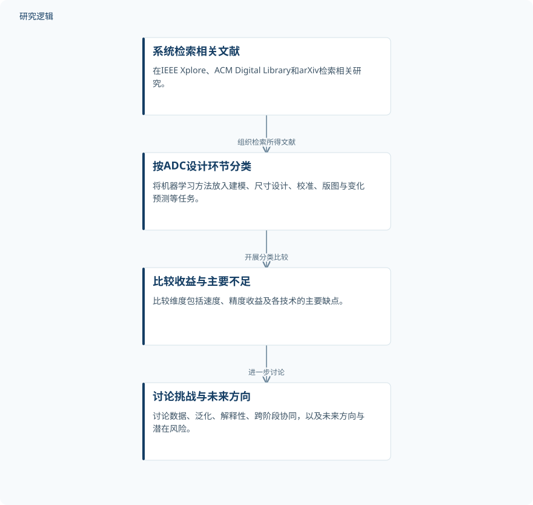

摘要解读
面向模数转换器设计自动化的机器学习技术综述
A Review of Machine Learning Techniques for Analog-To-Digital Converter Design Automation
解读更新 2026-10-30 10:31 · 依据公开摘要整理，未核验全文细节
模数转换器（ADC）如何在追求更高分辨率、速度和能效的同时，降低设计负担？这篇综述按设计环节梳理机器学习的应用，阅读价值在于理解算法能介入哪些任务，以及数据、泛化与跨阶段协同为何仍是难点。
文章目录
ADC设计难在反复迭代与多重约束
ADC负责将模拟世界的信息转换为数字信息。摘要指出，传统设计需要经历规格制定、行为建模、晶体管尺寸设计、原理图仿真、版图和版图后验证等环节。设计者还须考虑工艺、电压、温度（PVT）变化及良率，因此流程耗费人力，并高度依赖专业经验。机器学习所面对的，正是这类多环节、反复迭代的设计任务。
不按算法列清单，而按设计任务组织文献
作者报告，在IEEE Xplore、ACM Digital Library和arXiv中，对2015至2026年的相关研究开展系统检索。本文属于综述工作，摘要描述的方法是文献检索、分类与比较，而不是提出并验证某个新的ADC设计模型。
其组织方式是将回归、树模型、支持向量机、人工神经网络、卷积神经网络、图神经网络、强化学习、进化算法和贝叶斯优化等方法，放到具体设计环节中讨论。覆盖任务包括行为建模、晶体管尺寸设计、比较器与电容阵列校准、ADC校准、版图优化、PVT与良率变化预测，以及设计空间探索。
依据摘要整理的综述组织过程


示意摘要明确描述的检索、分类、比较和讨论关系，不是论文原图，也不表示新增实验流程。
下载 SVG图示关系说明
实线表示相邻阶段的信息流，虚线表示跨阶段联系或反馈。
系统检索相关文献 → 按ADC设计环节分类：组织检索所得文献；按ADC设计环节分类 → 比较收益与主要不足：开展分类比较；比较收益与主要不足 → 讨论挑战与未来方向：进一步讨论
摘要强调共性瓶颈，未给出算法性能排名
摘要说明，综述比较了各类技术在速度、精度等方面的收益及主要不足，但没有披露具体比较结果、提升幅度或统一评测指标。因此，当前资料支持理解其比较维度，不能据此判断哪种算法表现最佳，也不能将局部任务的收益等同于完整设计流程的收益。
摘要明确提出的开放挑战包括数据不足、泛化性能较差、可解释性偏低，以及跨多个设计阶段的协同优化仍较少得到探索。这些问题提示，评价机器学习辅助ADC设计，不能只关注单个环节的预测或优化表现，还需关注方法的适用边界。
检索覆盖与验证强度仍需查阅正文
仅凭摘要，无法判断纳入文献数量、筛选与质量评价标准，也无法核实各研究的数据样本规模、ADC类型、工艺条件和比较基线。速度与精度收益是否来自仿真、版图后验证或实测，以及能否跨设计和工艺推广，同样尚不明确。这些是摘要未交代的信息，不代表论文或被综述研究没有开展相关工作。
阅读启发：区分未来方向与已验证能力
阅读启发：摘要将生成式AI、图神经网络版图优化、物理信息学习、数字孪生及人机协同设计列为未来方向，并提醒生成式方法可能涉及可制造性和知识产权风险。进一步阅读时，建议关注这些方向分别对应哪些设计任务、已有何种验证，以及跨阶段信息如何衔接；不能据此认定其已实现可靠设计自动化，也不宜将数字孪生的展望直接解读为智能运维成效。
以上为本站阅读启发与建议，不是论文已验证的结论。